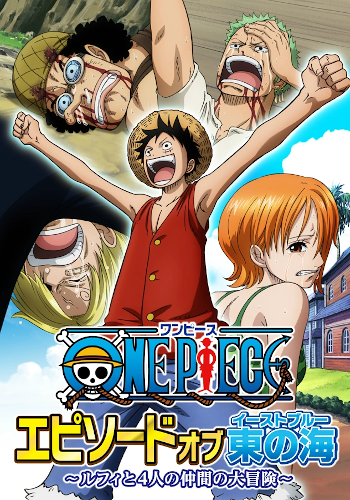
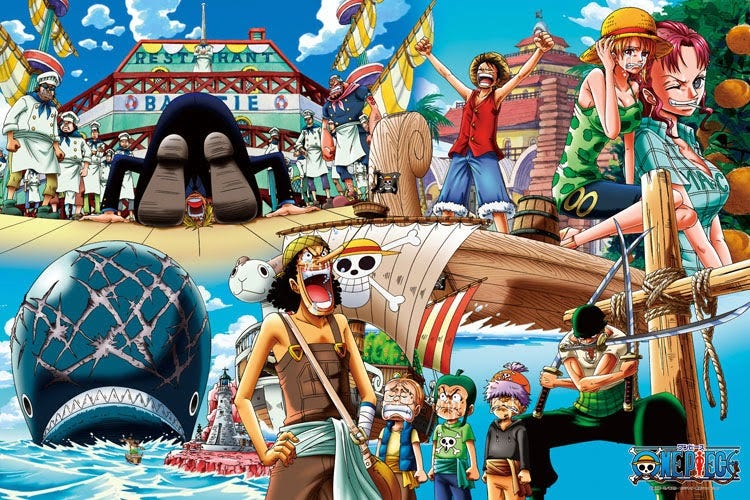

EAST BLUE


La Saga del East Blue es la primera saga de la serie de manga y anime One Piece. En ella, Monkey D. Luffy se encuentra con los Piratas de Shanks cuando aún era un niño que vivía en el East Blue. Aquí es donde recluta a la mayoría de su tripulación y, en definitiva, donde comienza la aventura. La saga se compone de seis arcos argumentales: Romance Dawn, Ciudad Orange, Villa Syrup, Baratie, Arlong Park y Loguetown.
La saga comienza con un flashback de la ejecución de Gold Roger en Loguetown, donde antes de morir, le dice a la multitud que salgan a buscar su tesoro. Con esto se desató la Gran Era de la Piratería, donde innumerables piratas de todos los mares alzaron su bandera y se fueron en busca del One Piece. La saga del East Blue se centra principalmente en que Luffy desea salir hacia al Grand Line y juntar sus compañeros de tripulación. Durante la saga, Luffy gana cuatro compañeros: Roronoa Zoro, Nami, Usopp y Sanji. Además que le asignan una recompensa 30.000.000.